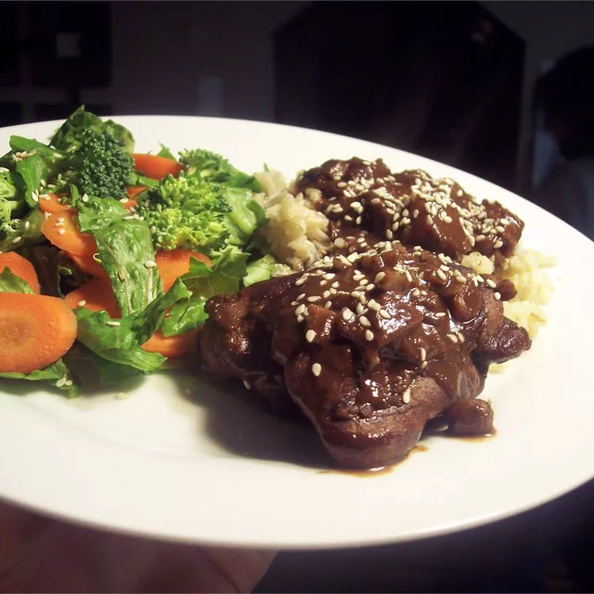

Home
Chicken Mole

Description
Chicken Mole is a beloved Mexican dish featuring tender chicken simmered in a deeply flavorful sauce.
The mole sauce combines chiles, spices, chocolate, and nuts to create a unique balance of savory and sweet flavors.
This dish is often served during celebrations and family gatherings, highlighting its cultural significance.
Its rich taste and aromatic spices make it a memorable meal for any occasion.
Ingredients
Serving Size: 4 people
- 2 lbs (900g) chicken pieces (thighs, drumsticks, or breasts)
- 2 cups store-bought mole sauce
- 2 cups chicken broth
- 2 tbsp vegetable oil
- 1 medium onion, sliced
- 2 cloves garlic, minced
- Salt and pepper, to taste
- Sesame seeds, for garnish (optional)
- Cooked rice, for serving (optional)
Steps
- Season the chicken pieces with salt and pepper.
- Heat the vegetable oil in a large pot or deep skillet over medium heat.
- Add the chicken pieces and brown them on all sides, about 5-7 minutes. Remove and set aside.
- In the same pot, add the sliced onion and cook until softened, about 3 minutes. Add the minced garlic and cook for 1 minute more.
- Return the browned chicken to the pot. Pour in the chicken broth and bring to a simmer.
- Add the store-bought mole sauce and stir to combine. Bring the mixture to a gentle simmer.
- Cover and cook for 25-30 minutes, or until the chicken is cooked through and tender.
- Taste and adjust seasoning with more salt and pepper if needed.
- Serve the chicken mole over cooked rice and garnish with sesame seeds if desired.